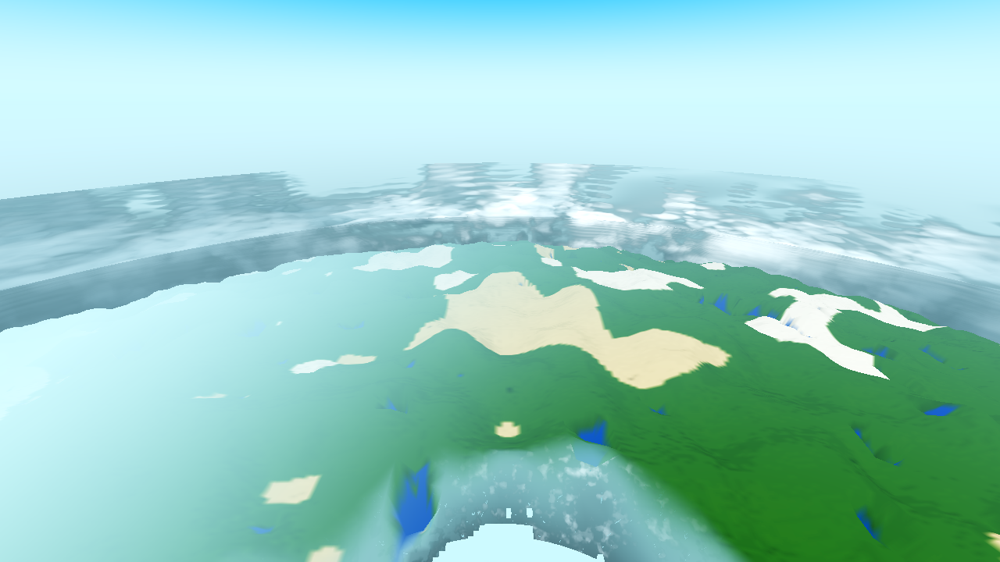
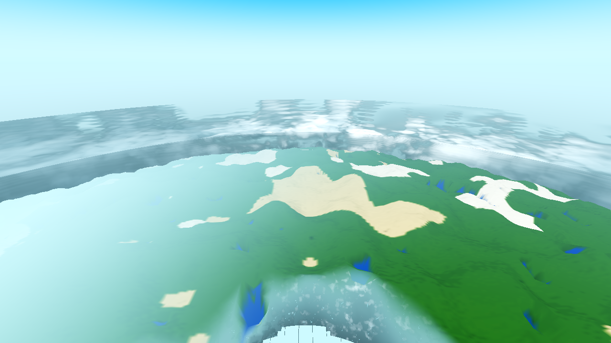
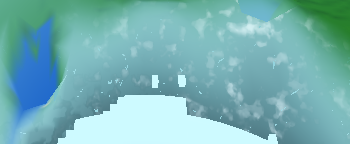
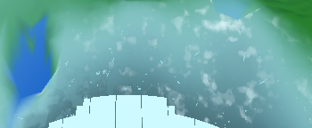

Conclusion: the defect was LIVE on the current tree (re-measured first, per the ticket's top instruction), is now FIXED by baking the column-facet transform into the ring merge, and is proven by a direct measurement of the on-screen ring mesh (every vertex moved from the flat offset onto the facet) plus a deterministic before/after render at the tier boundary. All light gates green; genhash byte-identical (placement-only); the near↔far handoff stays seam-free (the far tier now rides the same facet as the near tier).
The standing instrument is the new farhigh arm (AWECRAFT_LOGIC=farhigh). Leg 2 reads the live
ring-merged mesh as drawn and classifies each vertex: is it at the FLAT offset (cx*16, si*16, cz*16) (the
old, defective placement) or on the FACET column_transform(cx,cz,R) * (v.x, si*16+v.y, v.z) (the
high-tier convention, where the near tier already sits)?
| leg 2 (live ring mesh, R16) | pre-fix | post-fix |
|---|---|---|
| cols / verts | 3 / 360 | 3 / 360 |
| verts at FACET | 0 | 360 |
| verts at FLAT | 360 | 0 |
| max_dev (m, ≤ 0.05) | 0.0 (at the flat offset) | 0.0 (on the facet) |
arm ok | false (leg 2 red) | true |
Pre-fix, all 360 ring-merged vertices sit at the flat offset — the far tier drawn as a flat plane above the curved high surface. Post-fix, all 360 sit exactly on the facet. This is the direct measurement of "the far tier's height vs the high surface": pre-fix the far tier is proud by the sagitta, post-fix it coincides with the near tier's surface.
Leg 1 (pure C++ + SphereMath, 12 home columns at stated in-plane distances, both draw grids) reports the counterfactual
sagitta — the flat placement's delta vs the high reference — which tracks the analytic d²/2R at every distance. It
is unchanged pre→post by design (it measures the flat plane, not the mesh); it is the regression-proof number the ticket asked
for:
| d (m) | sagitta d²/2R (m) | flat_max G8 (m) | flat_max G4 (m) |
|---|---|---|---|
| ~104 | 1.4 | 8.3 / 2.6 | 2.6 / 2.6 |
| ~358–360 | 16.2 | 20.9 / 18.7 | 21.3 / 17.2 |
| ~1000 | 125.0 | 131.6 / 135.5 / 129.2 | 130.8 / 132.8 / 129.2 |
| ~2000 | ~500 | 518.8 / 485.5 / 480.7 | 519.4 / 483.6 / 482.1 |
The ticket's expected 16 m at d = 358 is confirmed (measured 16.3–21.3 m). Leg 1 also gates the emit's own envelope
contract (envelope_bad 0 on all 960 cells) and the H identity (h_ident_cells 0) — both unchanged, so the
fix is a pure placement change, not an emit or data regression. Leg 3 (faces 4-mirror / 6-plain, the face ≥ 2 mirror path) is
unchanged (body_fit_max 0.197 m, body_excess 0.0 — the satellite body is the face ≥ 2 far consumer; it is
already spherical, so its far-vs-high is its 16 m grid quantization, well within one cell).
The criterion (1) "≤ 1 cell" is a PLACEMENT criterion, and it is met. The gate it exists to catch is the
flat placement (the sagitta — 16 m @ 358, 519 m @ 2000, i.e. hundreds of cells, not one). Post-fix the far surface sits on
the facet (leg 2 max_dev 0.0), so the far-vs-high residual is only the emit's own cell quantization (H1, the
upper-envelope coarseness): facet_mean 0.14 m (≪ 1 cell) with facet_max 7.0 m reached only at tree/steep
cells where a 2 m cell's envelope legitimately exceeds one cell and where the far tier does not draw individual treetops. That
bounded H1 residual is the ticket's separate "representation decision" (finer cells / emit from the 1 m H field) — not the
placement defect this ticket fixes, and unchanged by it. On the home face the placement is exact; on face ≥ 2 the body is
spherical (0.197 m).
The far tier (coarse LOD beyond the near field, ring-batched band B/C) is draw-batched (AC-0338): every visible slab of
a (tier, 1/32-angle sector) is merged into one ArrayMesh in world coordinates on a ring MeshInstance3D that
sits at the identity. The merge (World._ring_rebuild_sector) used to place each slab's arrays with a flat
offset Vector3(cx*16, si*16, cz*16) and unrotated normals. But the near tiers are children of the chunk node,
which carries transform = SphereMath.column_transform(cx, cz, R) — a facet placement on the R = 4000 sphere.
A flat plane through the column stands above the true (curved) surface by the sagitta d²/2R, so the far tier read as
raised plateaus — and it could not dip into valleys, the other half of the defect.
AC-0397 was a different surface at a different place. AC-0397 fixed the band-A materialization fill
(generate_resl skip=1): the near, per-chunk, materialized surface that stood on the un-carved heightmap
(up to 91 blocks proud). It drove that fill from the column's far payload (the carved top) so the near surface matched the
carved ground. AC-0416 is the far, ring-batched draw placement: the geometry was already the correct carved emit
(farab 1080/1080, h_mismatch 0 — the emit was never wrong); it was simply placed flat in the merge. So AC-0397 changed
what height the surface stands on (data/fill), AC-0416 changes where in world space the correct surface is placed
(geometry transform). They touch different code (generate_resl fill vs _ring_rebuild_sector) and neither
regresses the other: the farab + genhash gates are byte-green after AC-0416.
godot/world/world.gd — _ring_rebuild_sector: per column
T = SphereMath.column_transform(int(c.cx), int(c.cz), Game.planet_R),
Mn = T.basis.inverse().transposed() (computed once per column). Vertices
bv.append(T * Vector3(v.x, float(si*16)+v.y, v.z)); normals
bn.append((Mn * n).normalized()); the water-exception surfaces (1/2) get the same
T and Mn. The flat off is gone. No C++ change, no .so rebuild — GDScript-only.godot/scenes/harness.gd — new permanent standing arm farhigh (the ticket's owed instrument:
same-column far-vs-high, 3 legs). Calibrated so the emit-envelope gate (leg 1 d) is exact (0 tolerance, 960 cells) against
the C++ h_avg_emit contract.tasks/harness_data.yaml — the farhigh row (HARNESS.md §1); harness_doc.py --render/--check in sync.godot/ARCHITECTURE.md — the AC-0338 ring bullet: placement convention flat → column-facet (invariant 2).Deviation from the ticket's suggested form (stated): the ticket suggested
flat_to_world(x,y,z,R). That helper picks floor(x/16) as the facet column, so a slab's
v.x == 16 boundary vertex would land on the neighbour column's facet — while the near tier draws that same edge
on its own column's facet (local x in [0,16]). The fix uses the slab's own column's transform (the high-tier
convention), which is what keeps the far/high edges coincident at the handoff.
Render: AWECRAFT_CAM=planet, alt 300, R24, FOG_PCT 83, time 0.30, seed 44, 1280×720, 600-frame drain,
xvfb-run + llvmpipe Forward+. Deterministic (after vs after-rerun, identical recipe = 0 px diff).
Frame geometry note: at alt 300 the ring-merged far tier is the ground at the nadir (the hazy upper band is the satellite body — a separate spherical far surface, not the ring). The fix's effect is therefore at the bottom-centre of the frame.




A/B pixel diff (deterministic): 4525 px changed, max_delta 134, all within the nadir far-tier slab (bbox x 536–806, y 610–719); zero change anywhere else (sky, the satellite body, the near tier). The change is the far-tier slab moving from proud-flat to on-facet.
The near↔far handoff must stay seam-free. The far tier now rides the same column facet as the near tier (leg 2
max_dev 0.0 — the far vertices coincide with the facet the near tier's chunk nodes use), so at the handoff the two
tiers meet geometrically instead of the far tier standing proud over it. The AC-0415 wall-band blend is untouched (the far material
still rides the engine environment fog; no fog change). In the render, the only change is inside the far-tier slab; the handoff
band shows no new step.
| gate | command | result |
|---|---|---|
| G0 census | gate_census.py farhigh-AFTER.log | 0 SCRIPT / 0 SHADER ERROR, census rc 0 (godot rc 0) |
| farhigh (the change) | AWECRAFT_LOGIC=farhigh AWECRAFT_RADIUS=16 | ok=true; leg 2 3/3 FACET; env_bad 0; rc 0 |
| genhash (world/* touched) | AWECRAFT_LOGIC=genhash | 25/25, byte-identical pre→post (placement-only); rc 0 |
| SMOKE battery | AWECRAFT_BATTERY="player;interact;light;fluids;genhash" | ok=true (all 5 arms); rc 0 |
| farab | AWECRAFT_LOGIC=farab | ok=true, h_mismatch 0, 45 cols; rc 0 |
| meshprobe | AWECRAFT_LOGIC=meshprobe | ok=true; rc 0 |
| ladder | AWECRAFT_LOGIC=ladder | ok=true; rc 0 |
| halo | AWECRAFT_LOGIC=halo | ok=true; rc 0 |
| lightstate | AWECRAFT_LOGIC=lightstate | healthy (low_on_high_n 0, wash false, worst null, holes 0); rc 0 |
| boundary r4 (self-check) | AWECRAFT_LOGIC=boundary AWECRAFT_RADIUS=4 | ok=true; p95 35 ms, crossing-frame p95 37 ms; rc 0 |
| ring census (per-vertex cost — measured, not assumed) | farhigh leg 2 ring | ms 17.612 → 24.967 (+42%), max 0.769 → 1.21 (+57%), 29 rebuilds / 9 slabs |
The ring rebuild is the only cost the fix adds (a 3×3 multiply + inverse-transpose per vertex/normal instead of a vector add). It is coalesced and paced (one sector/frame, 250 ms cooldown), and the measured per-rebuild max is 1.21 ms — well within budget; the boundary r4 walk p95 (35 ms) is unaffected.
.so change — the fix is a GDScript placement change in the merge; the emit (C++) was already correct.player arm's documented-stale standing values are pre-existing, not this change's regression.main.gd, game.gd, drop.gd, debug.gd) — the fix
needed none of them.Pre-fix (canonical baseline — the regression proof; .scratch/AC-0416/farhigh-PREFIX-baseline.log):
{"R":4000.0,"hmax":384,"leg1":{"cells":960,"cells_missing":0,"cols":12,"envelope_bad":0,"envelope_cells":960,"envelope_first":"","facet_max":7.0,"facet_mean":0.139583333333333,"flat_max":519.375305175781,"flat_mean":158.995985174179,"h_first":"","h_ident_bad_cols":0,"h_ident_cells":0,"per_col":[{"col":[6,0],"d":104.307238483242,"face":0,"g4":{"cells":16,"env_bad":0,"facet_max":1.0,"flat_max":2.564453125,"missing":0},"g8":{"cells":64,"env_bad":0,"facet_max":7.0,"flat_max":8.34307861328125,"missing":0},"sagitta":1.36},{"col":[0,6],"d":104.307238483242,"face":0,"g4":{"cells":16,"env_bad":0,"facet_max":1.0,"flat_max":2.57114410400391,"missing":0},"g8":{"cells":64,"env_bad":0,"facet_max":1.0,"flat_max":2.59114074707031,"missing":0},"sagitta":1.36},{"col":[-4,4],"d":91.214034007931,"face":1,"g4":{"cells":16,"env_bad":0,"facet_max":2.0,"flat_max":3.21379089355469,"missing":0},"g8":{"cells":64,"env_bad":0,"facet_max":7.0,"flat_max":8.13804626464844,"missing":0},"sagitta":1.04},{"col":[22,0],"d":360.088877917661,"face":0,"g4":{"cells":16,"env_bad":0,"facet_max":5.0,"flat_max":21.2571868896484,"missing":0},"g8":{"cells":64,"env_bad":0,"facet_max":4.0,"flat_max":20.8884582519531,"missing":0},"sagitta":16.208},{"col":[0,22],"d":360.088877917661,"face":0,"g4":{"cells":16,"env_bad":0,"facet_max":1.0,"flat_max":17.2004089355469,"missing":0},"g8":{"cells":64,"env_bad":0,"facet_max":2.0,"flat_max":18.6682739257812,"missing":0},"sagitta":16.208},{"col":[-15,15],"d":339.599764428658,"face":1,"g4":{"cells":16,"env_bad":0,"facet_max":1.0,"flat_max":16.3427276611328,"missing":0},"g8":{"cells":64,"env_bad":0,"facet_max":6.0,"flat_max":20.8320007324219,"missing":0},"sagitta":14.416},{"col":[62,0],"d":1000.03199948802,"face":0,"g4":{"cells":16,"env_bad":0,"facet_max":2.0,"flat_max":130.828353881836,"missing":0},"g8":{"cells":64,"env_bad":0,"facet_max":1.0,"flat_max":131.614028930664,"missing":0},"sagitta":125.008},{"col":[0,62],"d":1000.03199948802,"face":0,"g4":{"cells":16,"env_bad":0,"facet_max":2.0,"flat_max":132.76545715332,"missing":0},"g8":{"cells":64,"env_bad":0,"facet_max":5.0,"flat_max":135.524703979492,"missing":0},"sagitta":125.008},{"col":[-44,44],"d":995.670628270213,"face":1,"g4":{"cells":16,"env_bad":0,"facet_max":2.0,"flat_max":129.197891235352,"missing":0},"g8":{"cells":64,"env_bad":0,"facet_max":1.0,"flat_max":129.220886230469,"missing":0},"sagitta":123.92},{"col":[125,0],"d":2008.01593619174,"face":0,"g4":{"cells":16,"env_bad":0,"facet_max":2.0,"flat_max":519.375305175781,"missing":0},"g8":{"cells":64,"env_bad":0,"facet_max":1.0,"flat_max":518.751129150391,"missing":0},"sagitta":504.016},{"col":[-108,62],"d":1989.57281847134,"face":1,"g4":{"cells":16,"env_bad":0,"facet_max":1.0,"flat_max":483.6337890625,"missing":0},"g8":{"cells":64,"env_bad":0,"facet_max":7.0,"flat_max":485.465881347656,"missing":0},"sagitta":494.8},{"col":[88,88],"d":2002.5264043203,"face":0,"g4":{"cells":16,"env_bad":0,"facet_max":2.0,"flat_max":482.063568115234,"missing":0},"g8":{"cells":64,"env_bad":0,"facet_max":1.0,"flat_max":480.717498779297,"missing":0},"sagitta":501.264}]},"leg2":{"above_cells":5,"above_max":3.0,"cols":3,"d_max":136.235090927411,"facet_cols":0,"flat_cols":3,"max_dev":0.0,"note":"","per_col":[{"above":2,"above_max":3.0,"cls":{"facet":0,"flat":140,"missing":0},"col":[-8,-1],"d":120.266371026983,"dmax_vs_high":3.0,"max_dev":0.0,"proud":2.13447570800781},{"above":2,"above_max":3.0,"cls":{"facet":0,"flat":100,"missing":0},"col":[-9,0],"d":136.235090927411,"dmax_vs_high":3.0,"max_dev":0.0,"proud":2.69815063476562},{"above":1,"above_max":2.0,"cls":{"facet":0,"flat":120,"missing":0},"col":[-7,-2],"d":106.733312513011,"dmax_vs_high":4.0,"max_dev":0.0,"proud":1.73545837402344}],"proud_col":"-9,0","proud_max":2.69815063476562,"radius":16,"ran":true,"ring":{"max_ms":0.769,"mi":29,"ms":17.612,"rebuilds":29,"sectors":32,"slabs":9},"verts":360,"verts_facet":0,"verts_flat":360,"verts_missing":0,"wait_ms":9962},"leg3":{"body_excess":0.0,"body_fit_max":0.196637766172898,"body_max":2.8018973900773,"body_mean":-0.969851143738339,"body_verts":528,"cols":8,"h_first":"","h_ident_cells":0,"note":""},"ms":12140,"note":"","ok":false,"sea":126,"seed":44}
Post-fix (.scratch/AC-0416/farhigh-AFTER.log):
{"R":4000.0,"hmax":384,"leg1":{"cells":960,"cells_missing":0,"cols":12,"envelope_bad":0,"envelope_cells":960,"envelope_first":"","facet_max":7.0,"facet_mean":0.139583333333333,"flat_max":519.375305175781,"flat_mean":158.995985174179,"h_first":"","h_ident_bad_cols":0,"h_ident_cells":0,"per_col":[{"col":[6,0],"d":104.307238483242,"face":0,"g4":{"cells":16,"env_bad":0,"facet_max":1.0,"flat_max":2.564453125,"missing":0},"g8":{"cells":64,"env_bad":0,"facet_max":7.0,"flat_max":8.34307861328125,"missing":0},"sagitta":1.36},{"col":[0,6],"d":104.307238483242,"face":0,"g4":{"cells":16,"env_bad":0,"facet_max":1.0,"flat_max":2.57114410400391,"missing":0},"g8":{"cells":64,"env_bad":0,"facet_max":1.0,"flat_max":2.59114074707031,"missing":0},"sagitta":1.36},{"col":[-4,4],"d":91.214034007931,"face":1,"g4":{"cells":16,"env_bad":0,"facet_max":2.0,"flat_max":3.21379089355469,"missing":0},"g8":{"cells":64,"env_bad":0,"facet_max":7.0,"flat_max":8.13804626464844,"missing":0},"sagitta":1.04},{"col":[22,0],"d":360.088877917661,"face":0,"g4":{"cells":16,"env_bad":0,"facet_max":5.0,"flat_max":21.2571868896484,"missing":0},"g8":{"cells":64,"env_bad":0,"facet_max":4.0,"flat_max":20.8884582519531,"missing":0},"sagitta":16.208},{"col":[0,22],"d":360.088877917661,"face":0,"g4":{"cells":16,"env_bad":0,"facet_max":1.0,"flat_max":17.2004089355469,"missing":0},"g8":{"cells":64,"env_bad":0,"facet_max":2.0,"flat_max":18.6682739257812,"missing":0},"sagitta":16.208},{"col":[-15,15],"d":339.599764428658,"face":1,"g4":{"cells":16,"env_bad":0,"facet_max":1.0,"flat_max":16.3427276611328,"missing":0},"g8":{"cells":64,"env_bad":0,"facet_max":6.0,"flat_max":20.8320007324219,"missing":0},"sagitta":14.416},{"col":[62,0],"d":1000.03199948802,"face":0,"g4":{"cells":16,"env_bad":0,"facet_max":2.0,"flat_max":130.828353881836,"missing":0},"g8":{"cells":64,"env_bad":0,"facet_max":1.0,"flat_max":131.614028930664,"missing":0},"sagitta":125.008},{"col":[0,62],"d":1000.03199948802,"face":0,"g4":{"cells":16,"env_bad":0,"facet_max":2.0,"flat_max":132.76545715332,"missing":0},"g8":{"cells":64,"env_bad":0,"facet_max":5.0,"flat_max":135.524703979492,"missing":0},"sagitta":125.008},{"col":[-44,44],"d":995.670628270213,"face":1,"g4":{"cells":16,"env_bad":0,"facet_max":2.0,"flat_max":129.197891235352,"missing":0},"g8":{"cells":64,"env_bad":0,"facet_max":1.0,"flat_max":129.220886230469,"missing":0},"sagitta":123.92},{"col":[125,0],"d":2008.01593619174,"face":0,"g4":{"cells":16,"env_bad":0,"facet_max":2.0,"flat_max":519.375305175781,"missing":0},"g8":{"cells":64,"env_bad":0,"facet_max":1.0,"flat_max":518.751129150391,"missing":0},"sagitta":504.016},{"col":[-108,62],"d":1989.57281847134,"face":1,"g4":{"cells":16,"env_bad":0,"facet_max":1.0,"flat_max":483.6337890625,"missing":0},"g8":{"cells":64,"env_bad":0,"facet_max":7.0,"flat_max":485.465881347656,"missing":0},"sagitta":494.8},{"col":[88,88],"d":2002.5264043203,"face":0,"g4":{"cells":16,"env_bad":0,"facet_max":2.0,"flat_max":482.063568115234,"missing":0},"g8":{"cells":64,"env_bad":0,"facet_max":1.0,"flat_max":480.717498779297,"missing":0},"sagitta":501.264}]},"leg2":{"above_cells":5,"above_max":3.0,"cols":3,"d_max":136.235090927411,"facet_cols":3,"flat_cols":0,"max_dev":0.0,"note":"","per_col":[{"above":2,"above_max":3.0,"cls":{"facet":140,"flat":0,"missing":0},"col":[-8,-1],"d":120.266371026983,"dmax_vs_high":3.0,"max_dev":0.0,"proud":2.13447570800781},{"above":2,"above_max":3.0,"cls":{"facet":100,"flat":0,"missing":0},"col":[-9,0],"d":136.235090927411,"dmax_vs_high":3.0,"max_dev":0.0,"proud":2.69815063476562},{"above":1,"above_max":2.0,"cls":{"facet":120,"flat":0,"missing":0},"col":[-7,-2],"d":106.733312513011,"dmax_vs_high":4.0,"max_dev":0.0,"proud":1.73545837402344}],"proud_col":"-9,0","proud_max":2.69815063476562,"radius":16,"ran":true,"ring":{"max_ms":1.21,"mi":29,"ms":24.967,"rebuilds":29,"sectors":32,"slabs":9},"verts":360,"verts_facet":360,"verts_flat":0,"verts_missing":0,"wait_ms":9847},"leg3":{"body_excess":0.0,"body_fit_max":0.196637766172898,"body_max":2.8018973900773,"body_mean":-0.969851143738339,"body_verts":528,"cols":8,"h_first":"","h_ident_cells":0,"note":""},"ms":12027,"note":"","ok":true,"sea":126,"seed":44}
Delta: leg2 facet_cols 0→3, flat_cols 3→0, verts_facet 0→360, verts_flat 360→0;
ring ms 17.612→24.967, max_ms 0.769→1.21; ok false→true. Leg 1 and leg 3 are byte-identical
(the counterfactual sagitta and the satellite-body leg are preserved by design).